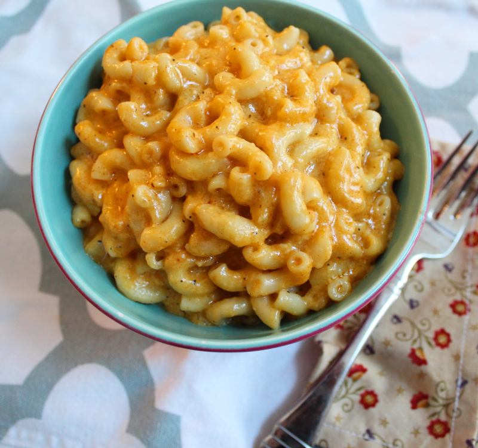

Mac and Cheese
Origin: United Kingdom
Macaroni and cheese (also called mac 'n' cheese in the United States, and macaroni cheese in the United Kingdom) is a dish of cooked macaroni pasta and a cheese sauce, most commonly cheddar. It can also incorporate other ingredients, such as breadcrumbs or meat. Traditional macaroni and cheese is a casserole baked in the oven; however, it may be prepared in a sauce pan on top of the stove or using a packaged mix. The cheese is often first incorporated into a Béchamel sauce to create a Mornay sauce, which is then added to the pasta. In the United States, it is considered a comfort food.
Ingredients
- 1 ¾ pounds whole-wheat macaroni
- ¾ cup butter
- ¾ cup all-purpose flour
- 6 cups milk, divided
- 1 tablespoon Worcestershire sauce
- 1 teaspoon mustard powder
- 1 teaspoon onion powder
- 1 teaspoon cayenne pepper
- Salt and ground black pepper to taste
- 1 (8 ounce) package shredded Cheddar cheese, divided
- 3 (8 ounce) packages shredded American cheese
- 1 (8 ounce) bag potato chips (such as Lay's®), crushed
- 1 cup shredded Cheddar cheese
- ⅓ cup grated Parmesan cheese
- Butter-flavored cooking spray
Instructions
- Step 1
Preheat an oven to 450 degrees F (230 degrees C).
- Step 2
Place chicken breasts between two sheets of heavy plastic (resealable freezer bags work well) on a solid, level surface. Firmly pound chicken with the smooth side of a meat mallet to a thickness of 1/2-inch. Season chicken thoroughly with salt and pepper.
- Step 3
Beat eggs in a shallow bowl and set aside.
- Step 4
Mix bread crumbs and 1/2 cup Parmesan cheese in a separate bowl, set aside.
- Step 5
Place flour in a sifter or strainer; sprinkle over chicken breasts, evenly coating both sides.
- Step 6
Dip flour coated chicken breast in beaten eggs. Transfer breast to breadcrumb mixture, pressing the crumbs into both sides. Repeat for each breast. Set aside breaded chicken breasts for about 15 minutes.
- Step 7
Heat 1 cup olive oil in a large skillet on medium-high heat until it begins to shimmer. Cook chicken until golden, about 2 minutes on each side. The chicken will finish cooking in the oven.
- Step 8
Place chicken in a baking dish and top each breast with about 1/3 cup of tomato sauce. Layer each chicken breast with equal amounts of mozzarella cheese, fresh basil, and provolone cheese. Sprinkle 1 to 2 tablespoons of Parmesan cheese on top and drizzle with 1 tablespoon olive oil.
- Step 9
Bake in the preheated oven until cheese is browned and bubbly, and chicken breasts are no longer pink in the center, 15 to 20 minutes. An instant-read thermometer inserted into the center should read at least 165 degrees F (74 degrees C).